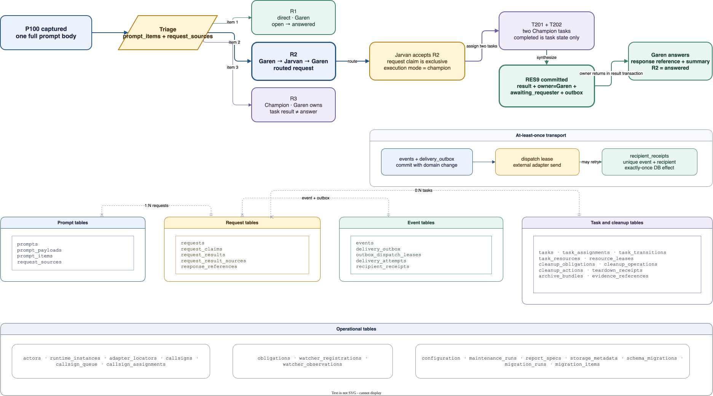

Direct Garen answer
Garen claims R1, records direct mode, answers, stores a bounded response reference, and marks R1 answered.
League of Orchestrator · issue 21 · proposed v1
A beginner-first walkthrough of the SQLite request lifecycle, from exact prompt capture through routed work, idempotent delivery, synthesis, user answer, reconciliation, and deterministic cleanup.
00 · fixed points
An invariant is a rule that must stay true. These are the controlling invariant definitions; later sections add step evidence without redefining them. A Shotcaller is a visible coordinator; a Champion is an issue-bound worker; a runtime is one live window or process; and an adapter is the boundary to a harness or terminal backend. Garen and Jarvan are synthetic Shotcaller names.
direct, hidden, and champion describe who executes.prompt_payloads; prompt_items and request_sources describe the split.completed never answers a request without Shotcaller synthesis and response evidence.01 · literal example
A prompt is one submitted message. A request is one independently finishable question, decision, or action extracted from that message. Splitting never duplicates the full payload.
Garen claims R1, records direct mode, answers, stores a bounded response reference, and marks R1 answered.
Owner transfer, task outcomes, result synthesis, return delivery, and final user answer stay separate and visible.
Garen remains request owner. The Champion completes a task; Garen still must synthesize and answer R3.

02 · signature walkthrough
Select a step. The persistent inspector shows actor, exact League command, tables read, rows written, transaction boundary, external work, outbox state, visible effect, retry, and failure state. Use Up/Down or Left/Right to move between steps.
03 · independent state machines
Request state, execution mode, Champion task state, delivery state, and cleanup state answer different questions. A truthful design keeps each transition explicit.
Routed cross-Shotcaller work follows this primary path. Branch states remain visible rather than hidden in prose.
A completed task may still own resources, require landing evidence, or need authority. Cleanup never rewrites the task outcome.
Task state
Cleanup state
04 · stable proposed v1 schema
These table names are exact inside this design. Implementation can add indexes and bookkeeping columns, but semantic renames or splits require an explicit issue 19 design change.
Logical identities stay separate from live windows and adapter-owned locators.
actorsOne full prompt payload, ordered semantic items, and source links.
promptsPermanent request state, temporary mutation claim, owner results, and opaque response references.
requestsImmutable source event, recipient outbox, dispatch attempt, and exactly-once database receipt.
eventsChampion execution, exact resources, recoverable actions, archives, and immutable teardown proof.
tasksBounded obligations, watcher observations, policy, maintenance, reporting, and migration receipts.
obligations| Request | Requester | Owner | Execution mode | State after triage | Summary |
|---|---|---|---|---|---|
R1 |
Garen | Garen | direct | open | Answer a bounded question |
R2 |
Garen | Garen | unclassified | open | Investigate a cross-project concern |
R3 |
Garen | Garen | champion | open | Coordinate a local implementation |
05 · concurrency + delivery
External transport can be uncertain. League stays truthful by making database effects idempotent and keeping each lease scoped to one responsibility.
Request claim
One runtime, one request, one expiring claim. Different windows can still claim R1 and R3 concurrently.
Dispatch lease
One dispatcher at a time. Expiry permits a retry after an uncertain send; it does not prove receipt.
Watcher registration
One short-lived receiver. It owns no request and cannot acknowledge an event without a recipient receipt.
The domain change, event, and recipient row are one transaction.
No writer lock remains open during adapter transport.
Unique event + recipient rejects a second database effect.
A missing acknowledgement may duplicate transport, never the guarded effect.
Indexed pending rows survive process crash or an offline Shotcaller.
Allowed
Window A claims R1 while Window B claims R3. SQLite serializes only their short commits.
Refused
Window A and Window B race for R2. Exactly one request claim succeeds; the loser performs no R2 work.
06 · resources + maintenance
SQLite cannot restart a stopped process or recreate a removed worktree. League plans and claims cleanup in one short transaction, performs one exact external action, and records the observed result in another short transaction.
Task-exclusive: revalidate, stop gracefully, prove exit. Shared lease: release only this task's lease. Retained handoff: transfer to an accepted owner. External unmanaged: never touch.
Archive evidence; release shared leases; transfer retained resources; stop exact exclusive resources; close exact Champion runtime; remove only the eligible clean worktree/local branch; release the callsign last.
v1/tasks/{prefix}/{task-id}/bundles/{bundle-id}/ contains a manifest, receipt, and escaped artifact names. SQLite stores hashes and stable bundle references.
After a crash, re-inspect reality before acting. Already-exited is a receipt; reused process identity is preserved; unknown ownership blocks cleanup.
Defaults: 90 resolved days, 256 MB database gate, 500 rows per run. Full prompt bodies and proved terminal delivery-attempt detail are removable. Attempt totals/times/final outcome remain on the permanent outbox; pending attempts, events, and receipts remain.
Pruning makes pages reusable. File shrinking requires league maintain reclaim-space after a visible threshold reminder; it never runs inside a prompt hook.
awaiting_authority; the Stop hook reports it but performs no destructive action.
07 · acceptance + rollback
Feature tests and global cutover are different risk boundaries. Every stage is isolated until one separately authorized, quiescent pointer switch makes SQLite the only canonical writer.
Temporary database/archive, fake clock, deterministic IDs, fake adapters, crash and concurrency tests.
Full synthetic lifecycle in a namespaced sandbox with global-state sentinels.
Dry-run/import isolated legacy snapshot, compare parity, never acknowledge live events.
Release byte parity, permissions, help, hook fixtures, backup, and rollback under an isolated prefix.
Separate namespace and synthetic identities for every claimed harness/backend pair.
Quiesce, drain old writer, backup, delta import, pointer/writer-epoch switch, synthetic smoke.
Keep intake blocked, restore exact old pointer/hooks/state, verify old watcher, never dual-write.
ADR 0002 accepts SQLite after a separately authorized cutover; ADR 0001 stays live until then. Application-linked SQLite 3.51.3 or newer enables WAL. Older libraries use rollback-journal mode.
Measure disabled/enabled, cold/warm, empty/small/large, and concurrent writers per adapter. Approve p50/p95/p99/max only from the complete installed path—never invent a number in design.
08 · ownership
The Markdown document is the complete implementation contract. This surface teaches the same material choices and links each boundary to its owner.
| Boundary | Owner issue | What remains separate |
|---|---|---|
| Event binding + recipient effect | #3 | Retryable transport versus unique database receipt |
| Dispatch mode + assignment | #4 | Request state and Champion transition |
| Stop + wake continuity | #5 | No polling daemon or inferred status |
| SQLite + runtime gate | #6 | Implementation and cutover |
| Adapter-neutral identity | #7 | Opaque provider locators |
| Resources + teardown | #11 | Task outcome and cleanup state |
| Callsign reuse queue | #13 | Persistent order versus active assignment |
| Prompt/request inbox | #17 | Prompt source and independent request |
| Legacy dependency inventory | #18 | Completed audit versus implementation mapping |
| SQLite CLI + migration | #19 | No direct SQL for agents |
| Design contract | #21 | No runtime claim |
| Reports | #22 | Read-only fact derivation |
| Sandbox + cutover | #23 | Separate global authority |
| Outbound privacy enforcement | #25 | Policy enforcement versus schema classification |